Tutorial
Acessando o repositório
- Entre em
github.com/ProjetoMPB/. - Clique em
Repositories, no canto superior esquerdo da tela - Na lista de repositórios, clique no repositório chamado
site. - Você deverá ver a tela abaixo. Note que você deverá estar vendo o ramo
main(circulado em vermelho na figura). Se você estiver no outro ramo (chamadogh-pages), clique na setinha do lado do nome e selecione o ramomain. 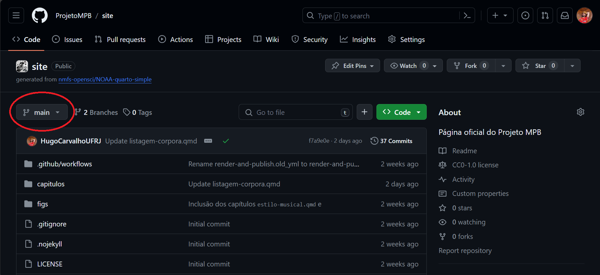
Um repositório é todo o seu projeto (diretórios e arquivos), no nosso caso, o site editável e a sua versão pública. Um ramo (branch) é uma versão do seu repositório.
No nosso caso, o ramo main contém os arquivos editáveis do site, e o ramo gh-pages é uma versão compilada do site, que é o que é acessado externamente.
Todas as alterações devem ser feitas sempre no ramo main. Elas são transportadas automaticamente para o ramo gh-pages, pelo arquivo da pasta .github/workflows.
Organização do repositório
- A organização do ramo main é bem intuitiva. Somente nos precisamos importar com os arquivos
_quarto.yml,index.qmde os arquivos dentro das pastascapitulosefiguras. Todos os outros arquivos são importantes para a formatação do site e sua compilação automática. Por enquanto, nenhuma edição neles precisa ser feita.
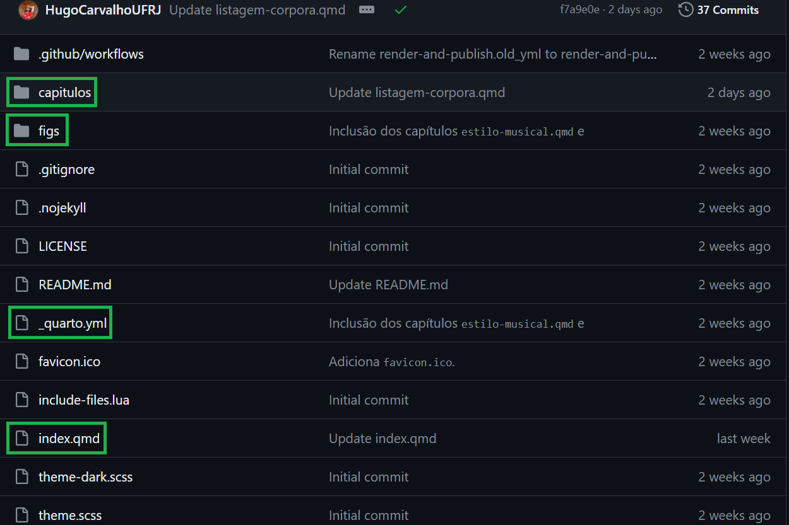
Note que o arquivo
index.qmdé o único que não está dentro da pastacapitulos. Ele deve estar no diretório principal do repositório pois ele irá gerar a primeira página a ser lida quando se entra no site. É o arquivo que contém nossas bios e a primeira apresentação do site.Não é obrigatório, mas por questão de organização coloquei todos os arquivos contendo capítulos dentro da pasta
capitulos, e as figuras na pastafigs. A única exceção é oindex.qmd.
O arquivo .yml
- O arquivo
_quarto.ymlé importante para a diagramação do site, incluindo título, logotipo, informações de copyright, dentre outros.
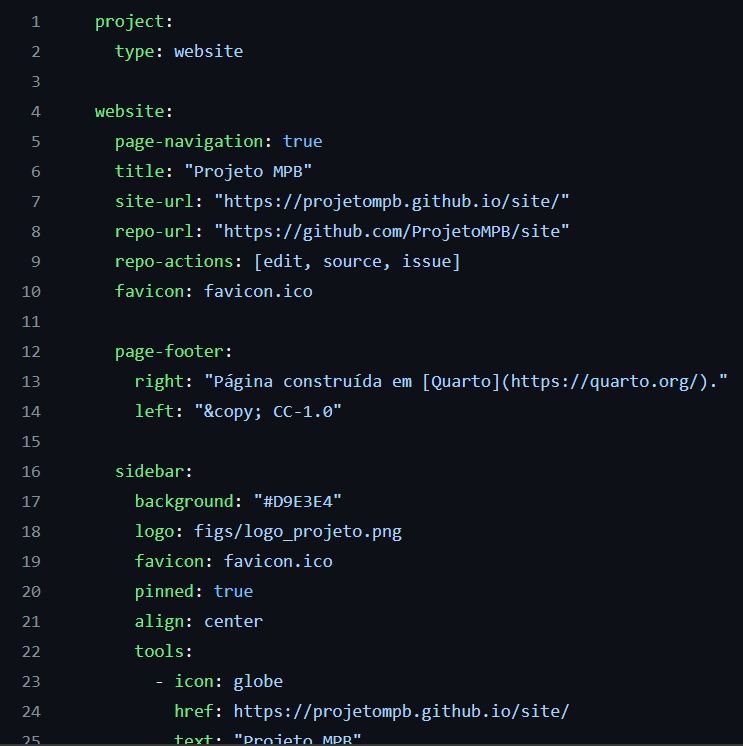
- No momento, somente a parcela abaixo do arquivo
_quarto.ymlé importante, pois é nela que iremos adicionar novas páginas ao menu lateral do site. A sintaxe é bem simples: a taghrefindica onde está o arquivo a ser incluído, e a tagtextindica como essa página será listada no menu lateral.
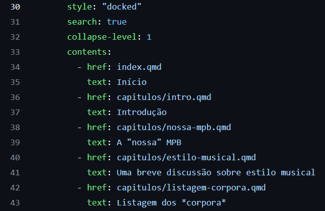
- Note que para os capítulos é necessário indicar que estão dentro da pasta
capitulos.
Editando um arquivo
- Vamos simular que queremos editar o capítulo sobre estilo musical. Para isso, entre na pasta
capitulose clique no arquivoestilo-musical.qmd. Você deverá ver a tela abaixo:
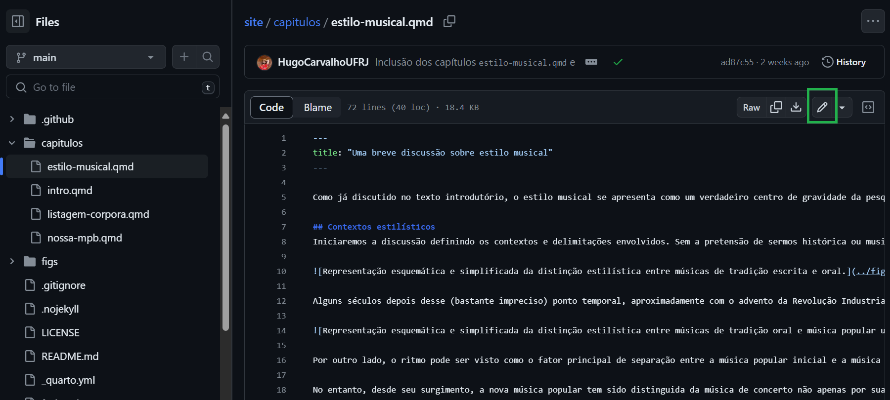
*Um arquivo .qmd é um arquivo de texto bem simples, que será convertido em HTML pelo Quarto. Sua edição é bem simples, e para editá-lo, clique no lápis indicado em verde na figura acima.
- Pronto! Agora a parte da tela exibindo o arquivo funciona como um editor de texto. Se você ainda estiver vendo o texto sem quebra de linhas, no menu marcado em verde na figura abaixo, selecione
Soft wrap.
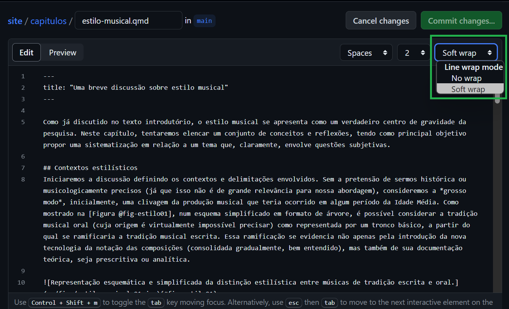
- Após fazer qualquer modificação no arquivo, o botão verde
Commit changes..., no canto superior direito da tela, ficará clicável.
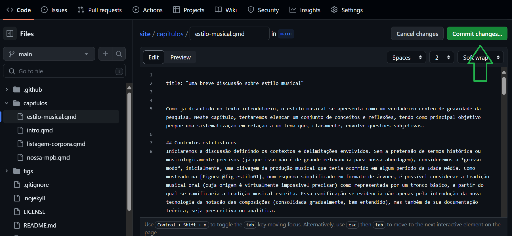
- Ao clicar nele para salvar as alterações, irá aparecer a janela a seguir. O git é uma ferramenta criada originalmente para controle de versão de código, especialmente quando muita gente trabalha no mesmo projeto. Assim, qualquer modificação “definitiva” no projeto (chamada de commit), pode ter uma justificativa, para que outros colaboradores consigam entender a edição do amiguinho. No nosso caso, somos só nós dois trabalhando na página, então não é grave deixar de lado essa descrição. Para finalizar, clique novamente em
Commit changes.
É importante que a opção “Commit directly to the main branch” esteja selecionada! É justamente isso que queremos fazer, para que o site seja automaticamente compilado. A alternativa apresentada é importante no mesmo cenário acima, caso alguém queira fazer uma modificação experimental no código antes de colocá-la no projeto principal.
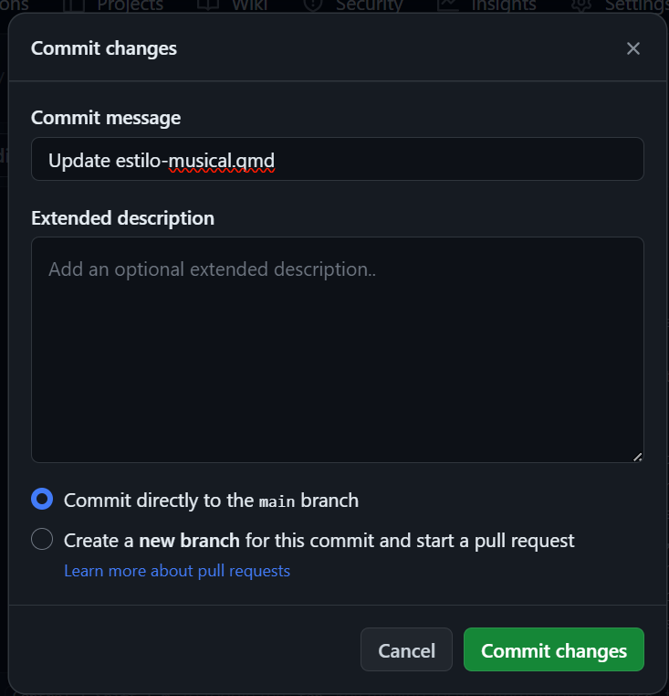
- Para voltar para a página principal, clique em
<> Codeno canto superior esquerdo. Note que do lado do seu nome de usuário vai ter uma bolinha agora amarela (indicada em verde na figura). Ao clicar nela, irá aparecer a janela mostrada na figura. Ela está indicando que o processo de compilação do site está em andamento. Para ver os detalhes da compilação, clique emDetails(não obrigatório).
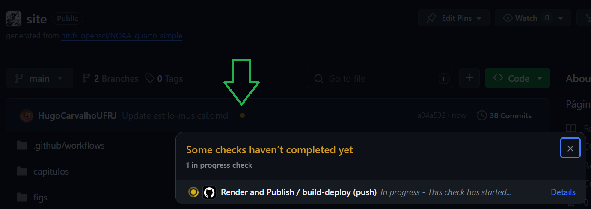
- Ao clicar em
Details, você verá algo como a figura abaixo. É essencialmente um terminal com um monte de códigos rodando nos servidores do GitHub, essencialmente baixando o Quarto e o LaTeX (e também Python e pacotes, quando colocarmos código na página), e fazendo a compilação de tudo.
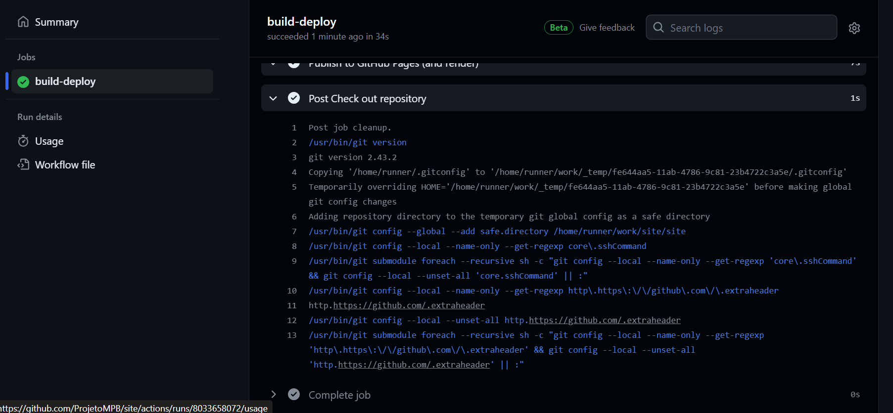
Repare que toda vez que um arquivo é editado internamente no GitHub e salvo, como mostrado acima, esse processo de compilação é automaticamente ativado. Por isso é bom pegar um capítulo, fazer todas as edições desejáveis, e salvar somente ao final. Editar o site no GitHub é uma tremenda mão na roda, mas tem esse pequeno custo.
É possível desativar a compilação automática do site a cada arquivo salvo, mas acho que por enquanto não será necessário.
- Ao voltar para a página principal (pode ser usando o botão de voltar do navegador), se você ver um check verde ao lado do nome do usuário, então a compilação deu certo!
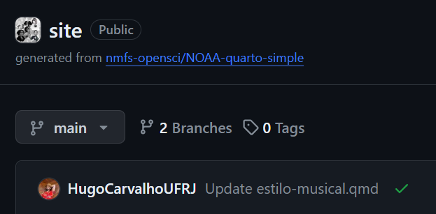
Sobre a linguagem Markdown
Os arquivos
.qmdsão escritos em Markdown, que é essencialmente um HTML simplificado: o que está nele é de bem simples escrita e leitura, e é traduzido em HTML por algum software (no nosso caso, o Quarto).O próprio site do Quarto tem um breve tutorial sobre como escrever em Markdown. Essencialmente tudo que eu sei de Markdown, aprendi daí e de umas poucas buscas no Google. É MUITO mais simples e amigável do que LaTeX! O site do Markdown Guide também tem um guia legal, mas eu gosto mais do tutorial do próprio Quarto.
Acho que pra começar a brincar, é isso! Qualquer outra coisa que você precisar, eu adiciono aqui! Tem bastante coisa que não falei, por exemplo: como inserir imagens, inserir links, fazer referência cruzada, etc., mas acho que tudo isso você vai inferir rapidamente examinando algum arquivo que queira editar e com os links de tutoriais acima. O que você precisar e achar pertinente, adiciono aqui no tutorial.
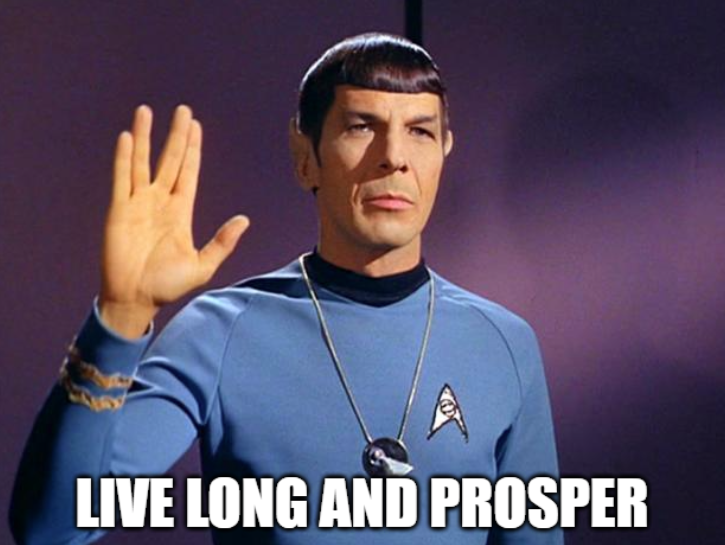